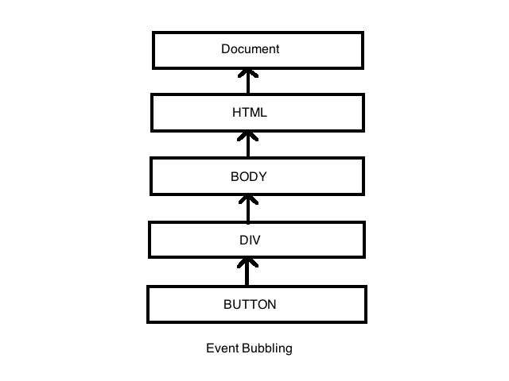
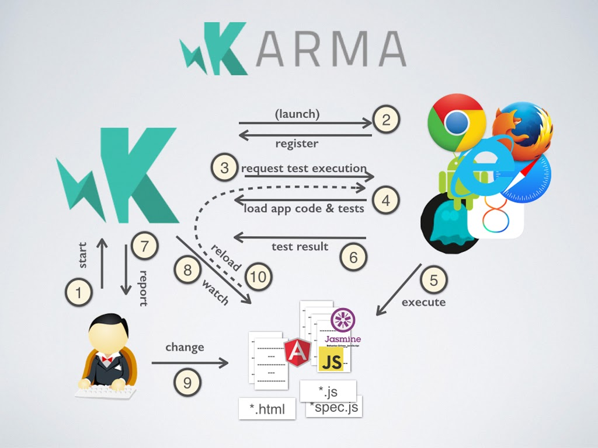
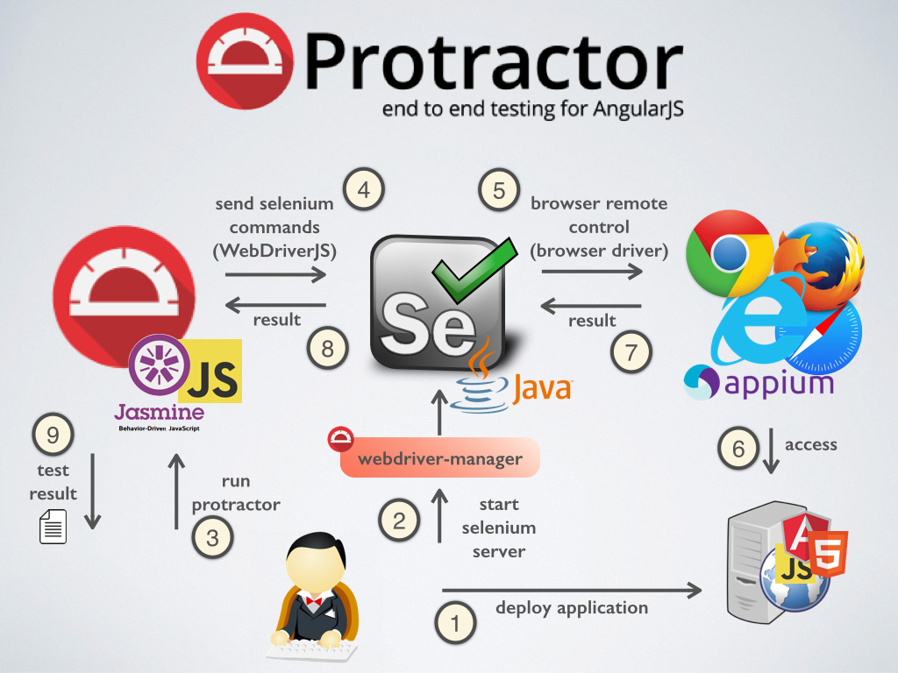
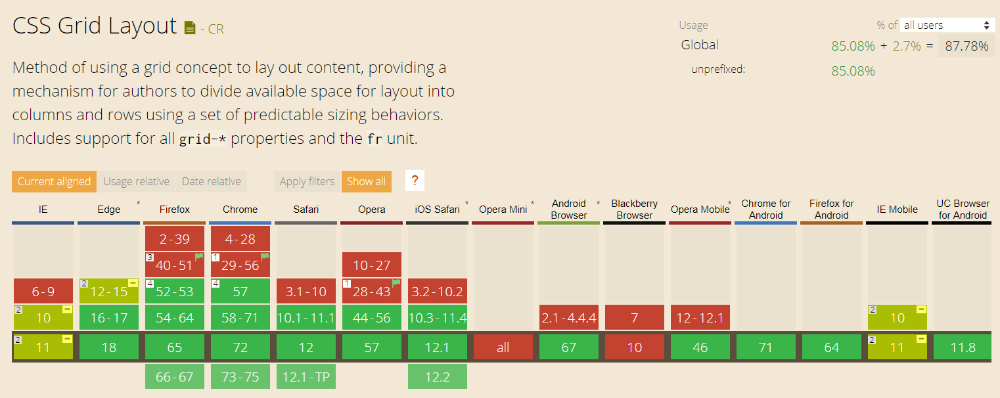

Help! my Project has a ...
... Frontend!

Agenda
- Definition of a frontend and its job
- Concepts
- UI Component Tree
- Complexity
- Threads and Asynchronous Behavior
- Testing
- Frameworks and Libraries
- Web
- UI-Design / CSS
Definition of a frontend and its job
Definition of a Frontend
- For the purpose of this talk, a Frontend is defined by having
- interaction with a user
- significant amount of logic running on a local machine
- i.e. not a terminal in the Host sense
- calls to some kind of logic (remote or local) which can be accessed through an API
- as opposed to a document centric application like Excel or Word
- no restriction on the runtime environment:
can be native, web, mobile, embedded, …
Job of a Frontend
- Display static frame: boxes, tabs, buttons, labels
- Display dynamic data
- Allow and handle user input and validation
- Allow and handle user actions
- Manage state (display and logical)
- Organize dialogs, allow communication between them
- Manage startup/shutdown, user session and settings
- Process things / communicate with backend
Concepts
Key Concepts (1/2)
- UI Component Tree
Everything is a rectangle in a hierarchy – where to draw the line? - Complexity
Tables are hard, Trees are harder, and you‘re always fighting constraints, but how do you divide and conquer? - Threads
There is only one thread and it processes all events asynchronously - Testing
Frontends tests can be automated – but do you really want to?
Key Concepts (2/2)
- Authorization
The frontend wants to know all the rights, not just one! - Error handling
Detect » Analyze » Display (» Quit or Continue?) - Backend API and Calls
Can we please generate this? And when may writing by hand be better? - Caching & Preloading
Can be a nightmare with object structures...
UI Component Tree
- DOM (Document Object Model)
- Events & event flow
- Event bubbling
- Architecture overview
- Angular and component driven architecture
- Components, Services, Modules
- Smart & presentation components
DOM
Document Object Model
The HTML DOM is a standard object model and programming interface for HTML. It's a standard for how to get, change, add, or delete HTML elements.

Event flow
Events are responsible for interaction of JavaScript with HTML web pages.
Basic example?
Button click
Event flow is the order in which event is received on the web page. If a nested element has been clicked, the click event is triggered on each parent of the nested element.
Event bubbling
When an event happens on an element, it first runs the handlers on it, then on its parent, then all the way up on other ancestors.
Components, Services, Modules
 Source
Source
Modules
- Every Angular app has a root module, conventionally named AppModule, which provides the bootstrap mechanism that launches the application. An app typically contains many functional modules.
- Organizing your code into distinct functional modules helps in managing development of complex applications , and in designing for reusability. In addition, this technique lets you take advantage of lazy-loading—that is, loading modules on demand—to minimize the amount of code that needs to be loaded at startup.
Components
- Every Angular application has at least one component, the root component that connects a component hierarchy with the page document object model (DOM).
- Each component defines a class that contains application data and logic, and is associated with an HTML template that defines a view.
Services
- For data or logic that isn't associated with a specific view, and that you want to share across components, you create a service class.
- Dependency injection (DI) lets you keep your component classes lean and efficient. They don't fetch data from the server, validate user input, or log directly to the console; they delegate such tasks to services.

Why should we divide components ?
Smart & presentation components
- Smart components
- define how the app work
- are connected to services (often stateful)
- know how to load and persist data
- Presentation components
- receive data via props (bindings)
- data comes as input, changes go as output
Complexity (1/2)
- What do we spend significant time on?
- Application Size
- A lot of dialogs which interact
- Large dialogs with lots of things happening in them
- Client and Dialog architecture
- Widgets with lots of (contradicting) features or combinations: Tables, Trees
- Challenge as soon as possible, early prototyping
- Doing the same thing in different ways: “I want it just like that but …”
- Challenge as soon as possible, use Design System
Complexity (2/2)
- Layout
- "CSS" - "Gesundheit!"
- Large amounts of data, e.g. tables but also rich text/html
- Lazy loading, caching, viewports
- Debugging
- Performance, layout and focus problems
Application Size:
Client Architecture
- Split the client into dialog components
- Visible Rectangles as a guideline
- If not: most likely problematic
- UI Component Tree » Dialog Component Tree
- Caution: Consider layout constraints, e.g. If a dialog has a min/max view, or it can be moved around
Client Architecture
- Communication rules apply
- Parent knows Child
- Child can define requirements for parent
- Global Services may be dangerous
- Lifecycle has to be synchronized between parent and child
- Separate hierarchy of dialog components or re-use the UI-Components?
Client Architecture
- Dialog component API (covering display, data, user actions, …)
- What has to be supplied from the parent:
Data, User context, external events (e.g. external user actions)? - What has to be supplied from the child:
UI Component, menu options, status information - What can be accessed implicitly (global service)?
- What has to be handled by the parent:
data changes, other actions - Concept: Smart- and Dumb-Components
- Dumb-Component: Self contained, gets everything from parent
- Smart-Component: Calls around (e.g. local and remote services)
Application Size:
Dialog Architecture
- Use focused components to reduce complexity within a dialog
- Visual:
- Build and use UI Components like Tables, Trees, Magic-Drop-Downs, …
- Consider using visual designers if available
- Non-visual (...)
Dialog Architecture
- Non-Visual:
- Data handing:
- simple references » complex models
- State management:
- Declare dependencies instead of programming them
- Use a state engine if necessary
- Actions: extract the logic (command pattern) operating on data model and state
Widgets with lots of (contradicting) features
- Use showcases of the UI toolkit library in specification
- Caution:
- Combinations may not make sense
- E.g. local filtering and sorting of lazy loaded table data will not work
- Features may not work (as intended) in combination
- UI libraries have bugs. Lots of them. Some even known for ages.
- Have an expert of the UI library at hand, and even then: prototype early
- Challenge early (this is getting more and more difficult)
Threads and Async behaviour
Testing
- Unit Tests (services, components) - synchronous and asynchronous
- Jasmine
- Karma
- JEST
- E2E Tests
- Protractor
Synchronous and asynchronous
Tests
How to
test
a code which relies on
asynchronous actions and operations
?
- Does the code...
- ...make asynchronous calls?
- ...use XHR, Promises, Observables?
- ...use external templates and styles?
How to...
test
...async code?
Use utilities that make the test wait until all asynchronous operations are completed.
- In Angular...
- async & whenStable
- fakeAsync & tick
- jasmine done function
Karma
Protractor
Frameworks and Libraries
What is a JS Framework?
Angular
- introduced by Google
- open source
- released in September 2016
- v3 was skipped to avoid semantic version issues
- component based architecture
Angular
pros & cons
- Focus on components
- High performance
- Application Component Tree
- Ivy renderer
- JIT & AOT
- TypeScript
- Angular CLI
- Steep learning curve
- Complex Angular Forms may be difficult
- RxJS may be difficult

React
- introduced by Facebook
- open source
- released in May 2013
- V layer in the MVW models

React
pros & cons
- Focus on components
- JSX
- Virtual DOM
- High performance
- Light-weighted
- Redux & flux architecture
- Limitation of documentation
- Trying to hook React with other libraries may be problematic
- Being too flexible in structure can be problematic
Vue.js
- introduced by Evan You
- open source
- released in February 2014

Vue.js
pros & cons
- Small size
- Virtual DOM
- Flexibility
- Simplicity in syntax & project setup
- Fast rendering
- Language barrier
- Closed and small community development
The Web
What is ES5?
- ES5 was created to standardize JavaScript
- ES5 is a shortcut for ECMAScript 5
- ES5 was released in 2009
EcmaScript Standards
- ES5 (2009)
- ES6 (2015)
- ES7 (2016)
- ES8 (2017)
- ES9 (2018)
Why is ES5 still relevant?
- There are lots of legacy projects, build scripts, etc. written in ES5
- Older Browsers (IE,...) support ES5 via polyfills (shims)
TypeScript
- is a typed superset of JavaScript that compiles to plain JavaScript
- was invented by Microsoft

Babel
a JavaScript compiler
It is a toolchain that is mainly used to convert ECMAScript 2015+ code into a backwards compatible version of JavaScript in current and older browsers or environments.
// Babel Input: ES2015 arrow function
[1, 2, 3].map((n) => n + 1);
// Babel Output: ES5 equivalent
[1, 2, 3].map(function(n) {
return n + 1;
});
Can I Use?
The site provides up-to-date browser support tables for the web technologies and features.
For example: css-grid, Array.prototype.find, ...
Chrome dev tools

Literature recommendation